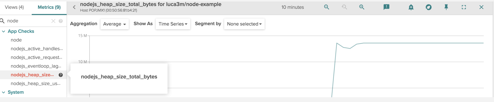

Integrate Node.js Application Metrics
Sysdig is able to monitor node.js applications by linking a library to the node.js code, which then creates a server in the code to export the StatsD metrics.
The example below shows a node.js application that exports metrics using the Prometheus protocol:
{
"name": "node-example",
"version": "1.0.0",
"description": "Node example exporting metrics via Prometheus",
"main": "index.js",
"scripts": {
"test": "echo \"Error: no test specified\" && exit 1"
},
"license": "BSD-2-Clause",
"dependencies": {
"express": "^4.14.0",
"gc-stats": "^1.0.0",
"prom-client": "^6.3.0",
"prometheus-gc-stats": "^0.3.1"
}
}The index.js library function is shown below:
// Use express as HTTP middleware
// Feel free to use your own
var express = require('express')
var app = express()
// Initialize Prometheus exporter
const prom = require('prom-client')
const prom_gc = require('prometheus-gc-stats')
prom_gc()
// Sample HTTP route
app.get('/', function (req, res) {
res.send('Hello World!')
})
// Export Prometheus metrics from /metrics endpoint
app.get('/metrics', function(req, res) {
res.end(prom.register.metrics());
});
app.listen(3000, function () {
console.log('Example app listening on port 3000!')
})To integrate an application:
Add an appcheck in the
dockerfile:FROM node:latest WORKDIR /app ADD package.json ./ RUN npm install ENV SYSDIG_AGENT_CONF 'app_checks: [{name: node, check_module: prometheus, pattern: {comm: node}, conf: { url: "http://localhost:{port}/metrics" }}]' ADD index.js ./ ENTRYPOINT [ "node", "index.js" ]Run the application:
user@host:~$ docker build -t node-example user@host:~$ docker run -d node-example
Once the Sysdig agent is deployed, node.js metrics will be automatically retrieved. The image below shows an example of key node.js metrics visible on the Sysdig Monitor UI:
|  |
Note
For code and configuration examples, refer to the Github repository.